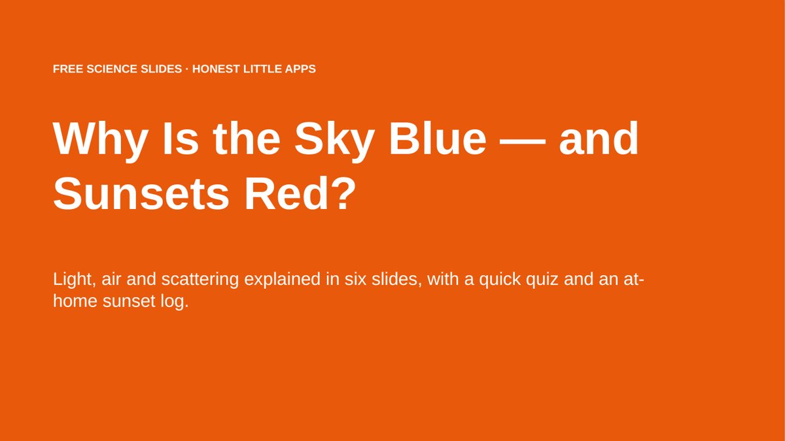

Home › Free Downloads › PowerPoint
Free PowerPoint downloadWhy Is the Sky Blue and Sunsets Red? Free Slides
Light, air and Rayleigh scattering explained in six simple slides, with a one-week sunset log activity and a quick quiz.
⬇ Download the PowerPoint file .pptx · free · no sign-upWorks in Microsoft PowerPoint, Google Slides (File → Import slides) and Apple Keynote. 16:9.

What’s inside
- Six science slides with plain explanations
- Golden hour and blue hour explained
- One-week sunset log activity
- 5-question quiz and answers
How to use it
- Download and open in PowerPoint, Google Slides or Keynote.
- Teach the six science slides.
- Set the sunset log as a home activity.

Asterfold: Sunset PlannerGet it free on the App Store
Questions
Why is the sky blue?
Air molecules scatter short blue wavelengths much more than red ones (Rayleigh scattering), so blue light reaches your eyes from every direction.
Why are sunsets red and orange?
At sunset light crosses much more air, so most of the blue is scattered away before it reaches you.
What is golden hour?
The warm, low light shortly before sunset (and after sunrise).
More free downloads
Daily Water Intake Tracker 2027Shift & Pay Tracker with OvertimeJob Estimate & Invoice TemplateClient Appointment Booking LogSleep Log & Bedtime Routine TrackerScreen Time Tracker: What Your Phone Really CostsBible Reading Tracker: All 66 BooksFamily Emergency Plan TemplateAfter-the-Argument Repair WorksheetThe 11 Human Body Systems: Free SlidesBooks of the Bible by Section: Free Slides